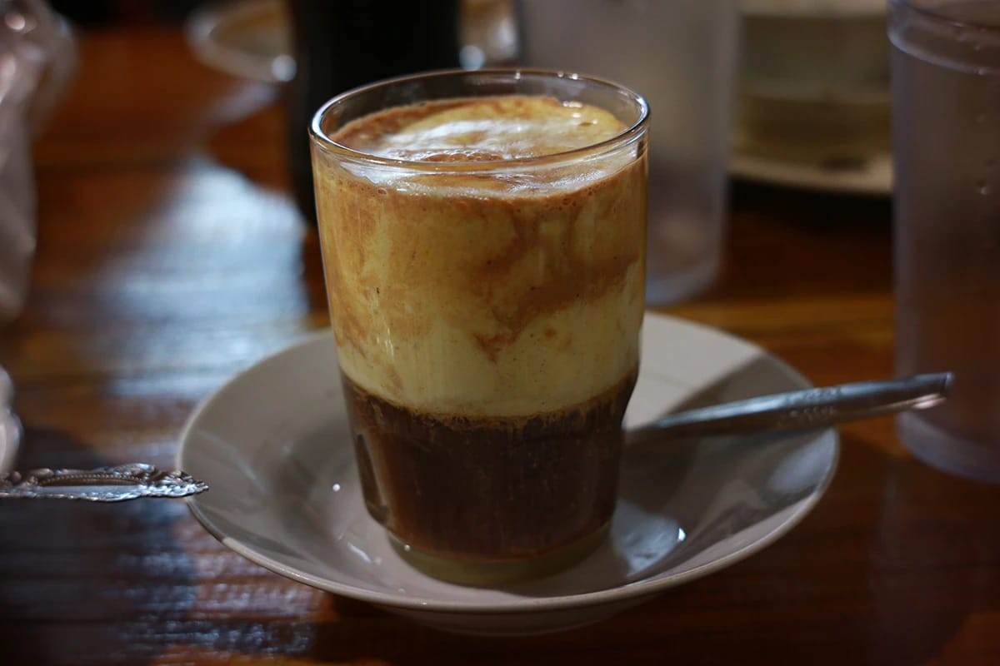

Wedang Uwuh adalah minuman dengan bahan-bahan yang berupa dedaunan mirip dengan rempah. Dalam bahasa Jawa, Wedang berarti minuman yang diseduh, sedangkan uwuh berarti sampah. Wedang uwuh disajikan panas atau hangat memiliki rasa manis dan pedas dengan warna merah cerah dan aroma harum.
STMJ adalah minuman kesehatan yang terdiri dari susu, kuning telur, madu dan jahe. Pada umumnya STMJ dijual dalam bentuk cair, siap saji. Tetapi untuk mempermudah pemasarannya, maka STMJ dibuat dalam bentuk yang lain yaitu dalam bentuk instan (serbuk).
Minuman khas Sumatera Barat ini memiliki banyak khasiat kesehatan karena menggunakan bahan-bahan yang juga kaya nutrisi. Kandungan Protein sedikit vitamin C di dalamnya bisa membantu Sobat Pesona memiliki daya tahan tubuh yang lebih kuat.
Bandrek merupakan minuman tradisional khas Jawa Barat yang menggunakan bahan utama gula aren, jahe, dan serai. Sensasi hangat di dalam tubuh dan efek jahe dan serai bisa membuat tubuh terasa nyaman, dan sangat cocok diminum saat sore atau malam hari.
Minuman khas Indonesia selanjutnya ini berasal dari Keraton Yogyakarta dan dikenal dengan nama Wedang Secang. Nama minuman ini sendiri didapatkan dari salah satu bahannya yakni kayu secang, bahan yang juga memberikan warna merah khas pada minuman tradisional satu ini.